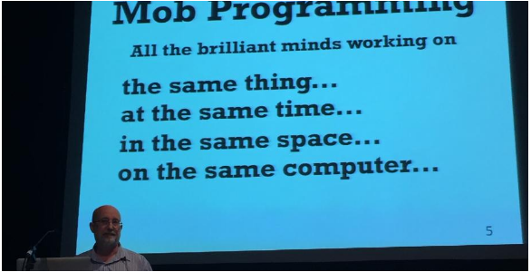

A WHOLE TEAM APPROACH
Jun 22, 2016
Il y a quelques mois maintenant, j’ai eu l’occasion d’assister, grâce à un user group local, à une présentation de Sebastien Lambla. Celle-ci était intitulée Your Agile is Dead. J’avoue que je ne savais pas trop de quoi allait pouvoir traiter une présentation avec un tel nom, il s’agissait en réalité d’un retour expérience sur un projet réalisé en mob programming.
J’étais déjà convaincu par les bénéfices pour un projet d’appliquer le pair programming ainsi que les autres méthodes portées par l’Extreme Programming. Cette présentation m’a montré que l’on peut aller encore plus loin, j’ai donc décidé d’essayer de l’appliquer à mon équipe.
LE MOB PROGRAMMING C’EST QUOI ?
“Mob” est le terme anglais pour désigner la foule. On peut présenter le mob programming comme une sorte de pair programming++ qui implique l’ensemble de l’équipe pour la réalisation d’une seule tâche.

Le Mob a été initiée par Woody Zuill. Elle découle d’un besoin récurent sur la plupart des projets : se réunir pour aborder des sujets complexes impliquant l’ensemble de l’équipe. Woody a alors décidé de réaliser ces réunions en y introduisant la notion de Driver / Navigator issue du pair programming. Cette pratique leur a immédiatement paru extrêmement pertinente et est entrée dans leurs habitudes.
Bien que je ne sois pas allé aussi loin, il est tout à fait possible de réaliser des projets entiers en mob programming.
INTRODUIRE LE MOB PROGRAMMING DANS UNE ÉQUIPE
Pour pouvoir l’appliquer, il m’a tout d’abord fallu convaincre de l’utiliser. Ceux qui ont déjà essayé de proposer le pair programming à des gens avec une vision (trop ?) “classique” du développement doivent imaginer ma principale problématique.
Toute l’équipe sur une seule tâche !? Tu veux ruiner notre productivité !
Mon discours était complètement informel, je me contentais de faire connaître la méthode autour de moi, à mes collègues, à mes pilotes, à mes managers.
Heureusement, tout le monde ne s’est pas montré aussi sceptique (pour ne pas dire réfractaire), d’autres se sont montrés plus curieux. C’était le cas de mon équipe avec laquelle nous sommes en accord sur les bonnes pratiques et les méthodologies de travail. L’amélioration continue fait partie de nos obsessions.
C’est lors d’une rétrospective d’équipe que nous avons décidé d’expérimenter le mob programming. Nous constations tous que le pair programming nous apportait de réels bénéfices, j’ai alors “officiellement” lancé l’idée. Comme nous sommes parfaitement autonome d’un point de vue opérationnel, notre pilote s’est vu obligé d’accepter malgré ses réticences du moment. De plus, nous avions une tâche idéale que nous souhaitions cibler pour cette expérimentation.
NOTRE EXPÉRIMENTATION DU MOB
Pour pratiquer le mob programming, mieux vaut être bien installé. Vous avez tout d’abord besoin d’un espace pouvant accueillir votre équipe, et assez calme pour pouvoir échanger facilement. Pour cela, une salle de réunion est sans doute la bonne solution. Il faut ensuite prévoir un poste de travail avec le support visuel sur lequel travailler : une télévision, un projecteur, … Il est important que tous les membres de l’équipe voient correctement ce qui est en train de se passer. Nous avions également plusieurs souris et claviers afin de facilement se passer la main. Ajoutez éventuellement un ou plusieurs laptop pour des tâches annexes telles que des recherches internet, consulter une documentation ou la rédaction d’un email. Et enfin, prévoyez un support sur lequel vous pourrez facilement représenter vos idées pour faciliter les échanges, un tableau blanc et quelques post-it feront l’affaire !

Concernant mon équipe, nous étions cinq personnes avec différents profils :
- un fonctionnel
- trois développeurs
- un recetteur
Pour nous faire une idée précise de la puissance du mob programming, nous avons choisi une évolution métier complexe à réaliser sur notre projet. Nous avons lancé la séance une fois que nous étions sûr d’avoir tous les éléments nécessaires pour réaliser la tâche demandée, aucun autre travail de préparation n’avait été réalisé en amont.
La première partie de la séance a donc consisté en une analyse du problème. Nous avons étudié les documents à notre disposition, regardé le code existant, débattu, schématisé, noté les points importants, … Ceci jusqu’à ce que tout le monde ait compris le besoin auquel il fallait répondre, ainsi que les tâches à réaliser. Cette étape nous a également permis de voir émerger un Ubiquitous Language au sein de l’équipe.
Est ensuite venu la réalisation. L’équipe a travaillé en TDD et BDD, nous avons traité les tâches les unes après les autres de cette manière, sans hésiter à lancer des micro-refactorings sur le code existant quand l’occasion se présentait. Même lors des phases de développement, la présence du fonctionnel et du recetteur s’est révélée très profitable. Cela leurs a permis de découvrir le red-green-refactor, mais aussi de challenger nos choix techniques.
Mais quand vous n’arrivez pas à tomber d’accord sur une décision technique, comment faites vous ?
C’est une question qui m’est posée de façon récurrente quand je parle du mob programming. Très honnêtement, nous n’avons pas rencontré cette situation. Une solution utilisée par Sebastien Lambla consiste à coder chacun de son côté la solution que l’on souhaite défendre pendant un temps donné, puis de comparer les résultats. De cette manière, vous révélerez plus facilement les avantages et les contraintes de chaque solution. Il vous faudra peut-être faire des concessions et accepter que votre solution n’est pas celle retenue.
CONSTATS ET RÉSULTATS
Notre équipe s’efforce de travailler avec des approches DDD et BDD, le mob programming nous a permis d’aller dans ce sens. Une des principales problématiques dans le développement logiciel est la communication entre les différents métiers qu’il implique. Parce qu’ils ne parlent pas tous ensemble, et surtout pas tous en même temps, cela mêne à des incompréhensions et des lenteurs. Avec le Mob, vous enfermez les three amigos dans une salle pour résoudre un problème. Les échanges autour du besoin se font en direct avec des gens dont l’attention est entièrement portée sur ce besoin, vous êtes sûr de vous comprendre rapidement.
Comme nous avons été cinq à étudier le besoin, nous avons pu confronter cinq interprétations différentes des documents à notre disposition. Cet exercice est très intéressant à mener car nous avons immédiatement constaté des nuances dans nos compréhensions du besoin. Tant que vous n’arrivez pas tous à être d’accord sur le travail à réaliser, c’est qu’il existe une incompréhension qu’il faut résoudre, si vous n’y arrivez pas, c’est sans doute qu’il vous manque des éléments. A l’issue de notre séance, nous étions sûr d’avoir produit une solution adaptée au besoin.
Un autre avantage du mob programming est qu’il permet d’augmenter le bus factor de l’équipe à son maximum. Il s’agit du nombre de personne au deçà duquel votre projet n’est plus viable. Comme la totalité de votre équipe a travaillé sur le même sujet, la totalité de votre équipe possède la connaissance métier et technique. Pour perdre cette connaissance il faudrait que vous perdiez l’ensemble de votre équipe.
Même lors des phases de développement, notre fonctionnel et notre recetteur ont su challenger notre travail, en grande partie grâce à l’Ubiquitous Language et aux tests, mais aussi parce que nous avons fait l’effort de commenter à l’oral tout ce que nous écrivions. L’un d’eux s’est par exemple étonné d’une dépendance que nous utilisions dans une méthode, ce qui a révélé un problème de design dans notre code. La présence de trois développeurs à également de gros impacts sur la qualité du code, le principe est le même que pour le pair programming. Le code produit lors des séances de Mob est donc de très bonne qualité.
Notre productivité a sans doute été l’aspect du mob programming qui nous a le plus surpris ! Les solutions émerges très rapidement et l’équipe avance continuellement, un peu comme un bulldozer écarte tout ce qui se trouve sur son passage. Les séances sont très dynamiques, les idées fuses, il faut être capable de rester concentrer pour ne pas perdre le fil des événements. Le rythme peu même être tellement soutenu qu’il en devient épuisant, il est préférable d’aménager des pauses régulières, nous avons donc adopté la technique du pomodoro.
Le mob programming a également permis de resserrer d’avantage les liens dans notre équipe. Tout le monde est impliqué, tout le monde est au même niveau, tout le monde apporte sa contribution à une tâche potentiellement complexe, ce qui génère un sentiment de satisfaction général. De plus, c’est l’équipe et non un individu qui porte la responsabilité de ce qui a été produit, ce qui rend tout le monde beaucoup plus serein sans s’être déresponsabilisé pour autant.
Le Mob permet également de comprendre les problématiques de chacun. Mes problématiques de développeur ne sont pas celles de mon recetteur ni celles de mon fonctionnel. Travailler tous ensemble permet de mieux se comprendre, aborder les problèmes sous différents points de vues et ainsi de mieux avancer vers notre objectif. Cela permet également à chacun de partager ses compétences, son expérience, et ainsi de tirer le niveau de l’équipe vers le haut.
Nous avons donc été convaincus par l’efficacité du mob programming, les résultats obtenus ont créé une réelle émulation et cette pratique est entrée dans nos habitudes de travail. Si une tâche ou un problème complexe doit être traité, alors nous regroupons l’ensemble de l’équipe pour y répondre. Nos pilotes ont également été convaincus par les résultats obtenus et nous laissent désormais l’appliquer sans aucune réticence.
LE MOB, OUI MAIS…
Je me dois d’apporter certaines limites au mob programming, il faut que certaines conditions soient respectée pour tirer les bénéfices de cette méthode de travail.
Le principale objectif du Mob est de pouvoir produire un logiciel de qualité :
- qui répond de manière adaptée au besoin
- dont le code source est propre et robuste
Si la qualité n’est pas votre priorité absolue, alors travailler en mob programming n’est sans doute pas la solution la plus adaptée pour votre équipe. Pour rappel, c’est parce que nous constations les gains de qualités obtenus grâce au pair programming que nous avons décidé de tenter l’expérience.
La grande force de cette pratique réside dans la communication et la collaboration qui sont grandement facilitées. Il me semble donc évident que votre équipe doit être désireuse de travailler ensemble, l’imposer à quelqu’un est un non-sens, et peut même se révéler pénalisant pour l’équipe. Les membres de l’équipe doivent également être ouverts à de nouvelles pratiques. Compte tenu de l’aspect “atypique” du mob programming, il ne faut pas avoir peur de changer certaines de ses habitudes de travail, ni de travailler devant ses collègues. J’ai pu animer plusieurs talks autour de ce sujet, je constate que ceux qui ont le mieux reçu le Mob étaient globalement des profils avec une bonne expérience de l’agilité. Pour cela, je pense qu’il est préférable que le pair programming soit déjà bien mis en place au sein d’une équipe avant d’aller plus loin.
Oui mais moi je suis dans une équipe de douze personnes…
Il y a effectivement une taille idéale pour un équipe qui travaille en mob programming, je pense qu’elle est de cinq ou six personnes. Cependant, il doit être possible de l’appliquer sur des projets avec des équipes plus conséquentes. Si c’est votre cas, vous ne travaillez sans doute pas tous sur les mêmes problématiques, vous pouvez alors identifier les personnes à regrouper pour travailler ensemble. Cela soulève des questions d’organisation.
La façon dont l’équipe est installée est un facteur clé ! Si vous n’êtes pas au calme, alors vous aurez des difficultés à échanger, vous serez interrompus. Nous avons constaté que, parce que nous étions tous ensemble isolés dans une salle de réunion, nous avons beaucoup moins été dérangé. Enfin, si tout le monde ne voit pas bien ce qu’il se passe à l’écran et ne peut pas intervenir à n’importe quel moment, alors vous risquez de perdre des gens en cours de route.
SI ON POUSSE À L’EXTRÊME
Mon article décrit les impacts du mob programming lorsqu’il est appliqué ponctuellement. En y réfléchissant, je me rend compte que ces impacts sur le fonctionnement de mon équipe seraient bien plus profond si nous travaillons uniquement de cette manière.
Quelle utilité à maintenir le daily standup ? Idem pour nos tests croisés (revue du code d’un autre développeur avant de l’envoyer à la recette) ? Finalement, notre kanban ne devient-il pas à une simple todo list ?
Les exemples de ce genre sont nombreux, et remettent même en questions certaines pratiques de l’agilité. Voilà pourquoi Sebastien Lambla déclarait “Your Agile is dead” !
Merci à mes « co-mobeurs » Ouarzy et Nadège pour leurs reviews.